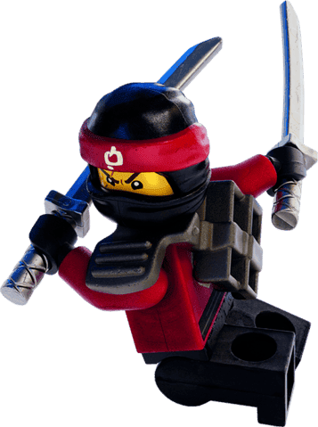

Introducción
Ninjago es una franquicia que inició como una serie animada de televisión de superhéroes de fantasía épica producida por The Lego Group. Fue creada con la intención de que coincidiera con la línea de juguetes de construcción LEGO Ninjago, basada en los personajes y acontecimientos de la serie. Se centra en el mundo ficticio de Ninjago y cuenta la historia de un grupo de seis ninjas adolescentes y sus batallas contra las fuerzas del mal. La serie fue creada por Michael Hegner y Tommy Andreasen, dos productores de cine daneses. El guion corrió a cargo de Kevin y Dan Hageman hasta la novena temporada; su sucesor como guionista principal fue Bragi Schut.
La serie estuvo en producción continua durante más de un decada y celebró su décimo aniversario el 14 de enero de 2021. Comenzó con dos episodios piloto en enero de 2011, a los que siguieron dos temporadas de 13 episodios que se emitieron de diciembre de 2011 a noviembre de 2012. En un principio, se tenía prevista una duración de tres años, con la segunda temporada como final original. Pero a raíz del éxito de la serie y de su línea de productos, se decidió que su producción continuara, con trece temporadas más, un especial, una adaptación cinematográfica y una miniserie de cuatro episodios. Ninjago: Maestros del Spinjitzu fue producida por Wil Film ApS durante sus diez primeras temporadas. La producción se trasladó a WildBrain Studios para la undécima temporada, y la serie se retituló Ninjago. La serie concluyó el 1 de octubre de 2022, y la segunda parte de la decimoquinta temporada se estrenó en Netflix.
En Dinamarca, donde se encuentran las productoras originales de la serie, se estrenó en Cartoon Network. A nivel internacional, se emitió en varios canales de Cartoon Network. En Estados Unidos, se emitió en Cartoon Network hasta 2020, cuando los estrenos se trasladaron a Netflix. En Canadá, la serie se emitió en Teletoon y YTV.
Una secuela titulada Ninjago: El Ascenso de los Dragones, ambientada en la misma continuidad, se estrenó el 1 de junio de 2023. Esta secuela matiene el cast original y suma nuevos personajes al elenco. Su segunda temporada se estrenó en 2024 divida en 2 partes; la primera, el 4 de abril en Netflix, mientras que la segunda parte fue estrenada el 25 de julio en Peacock y posteriormente fue removida y oficialmente lanzada el 3 de octubre en Netflix.
La tercera temporada fue estrenada en 2025, con su primera parte siendo el 17 de abril en Netflix y su segunda parte, en The Roku Channel en 3 diferentes partes: episodios 11-14 el 24 de abril, episodios 15-18 el 25 de abril y episodios 19-20 el 25 de agosto; todos los episodios fueron oficialmente lanzados el 4 de septiembre en Netflix.
La cuarta temporada fue estrenada en Netflix en 2026. Su primera parte, el 2 de abril, mientras que la segunda parte fue estrenada en Tubi el 22 de julio. Fue lanzada oficialmente el 3 de septiembre en Netflix.
Su quinta y última temporada, subtitulada La Furia de los Dragones, tiene su estreno programado para 2027.
¡Ganate tu set favorito de Ninjago!
Únete a los Maestros del Spinjitzu para proteger la ciudad de NINJAGO de los malvados invasores con los increíbles juguetes construibles de NINJAGO, como mecas, minifiguras, vehículos con armas, motocicletas, dragones, templos ninja y otros edificios. Vive un sinfín de aventuras recreando trepidantes películas inspiradas en batallas o creando tus propias historias en este mundo fantástico repleto de infinitos tesoros
